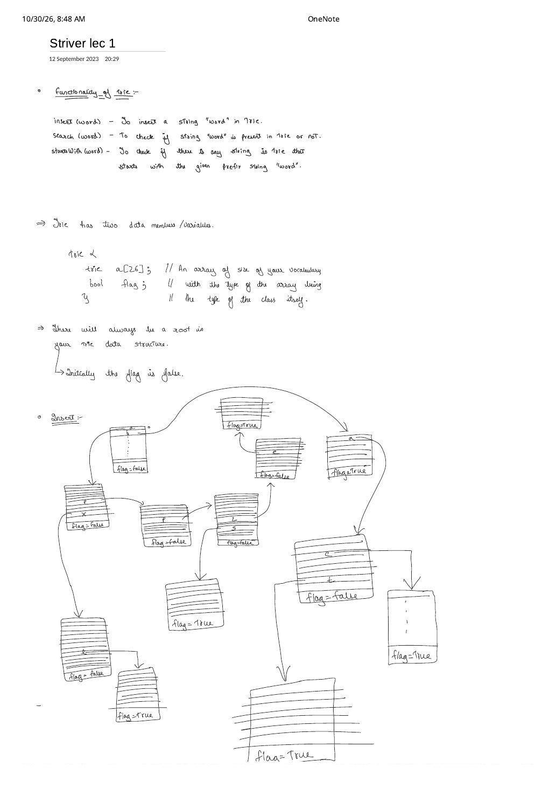
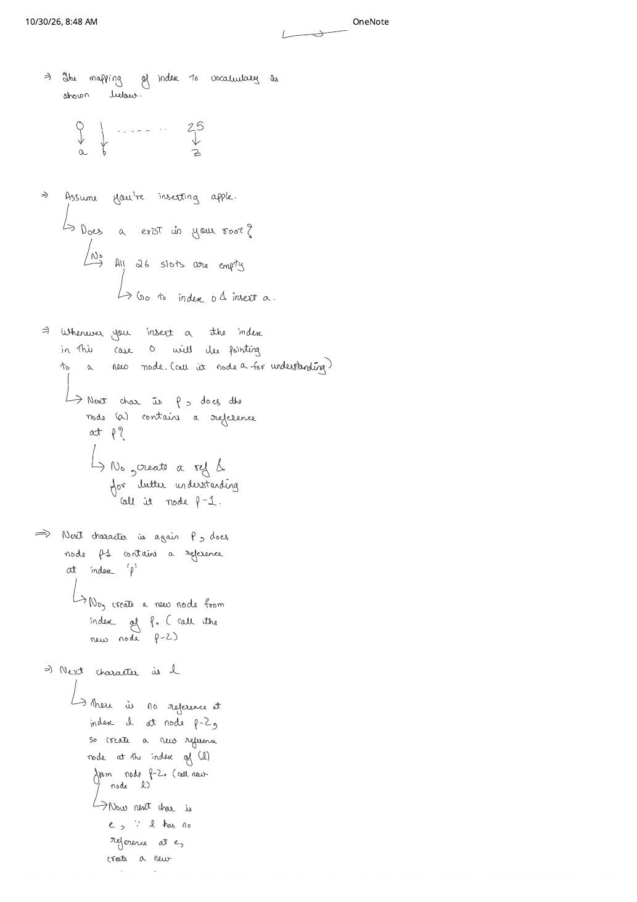
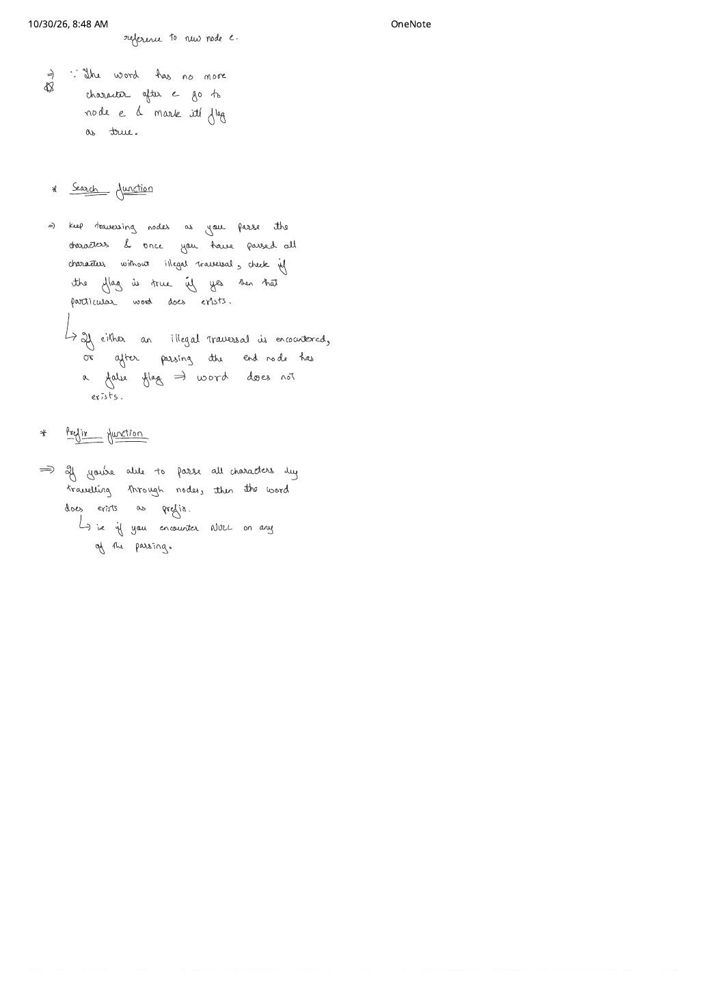

Implement Trie (Prefix Tree): insert, search & startsWith
Expanded from handwritten competitive coding study note: 01_Striver_lec_1.pdf
A Trie (pronounced "try", from retrieval; also called a prefix tree) stores strings character by character along root-to-node paths so that words sharing a common prefix share the exact same prefix nodes in memory. This note expands Striver Trie Lecture 1 (equivalent to LeetCode 208: Implement Trie (Prefix Tree)), covering the 26-slot self-referential node layout, the pointer-box trace of "apple", and the exact terminal invariant separating search(word) from startsWith(prefix).
1. Problem & Functionality Specification
Design a data structure for lowercase English strings ('a'–'z') supporting three operations:
insert(word)— Inserts the stringwordinto the Trie.search(word)— Returnstrueif and only if the exact stringwordhas been previously inserted into the Trie, andfalseotherwise.startsWith(prefix)— Returnstrueif there is any previously inserted string in the Trie that begins withprefix, andfalseotherwise.
2. Progression: Brute Force $\to$ Hash Set $\to$ Prefix Tree
| Approach | insert(word) |
search(word) |
startsWith(prefix) |
Trade-off |
|---|---|---|---|---|
| Unsorted Vector | $O(L)$ | $O(N \cdot L)$ | $O(N \cdot L)$ | Scans every stored string on every lookup. |
unordered_set<string> |
$O(L)$ avg | $O(L)$ avg | $O(N \cdot L)$ (or $O(L^2)$ insert if hashing all prefixes) | Whole-string hashing destroys prefix structure and suffers $O(N \cdot L)$ worst-case hash collisions. |
| 26-Way Trie (Optimal) | $O(L)$ deterministic | $O(L)$ deterministic | $O(|prefix|)$ deterministic | Shared prefixes allocated once; runtime depends only on query length, independent of $N$! |
3. Anatomy of a Trie Node & Vocabulary Mapping
In the handwritten note, a Trie node is sketched conceptually as:
// Conceptual sketch from 01_Striver_lec_1.pdf:
// trie {
// trie a[26]; // Array of size of vocabulary (0->'a', 1->'b', ..., 25->'z')
// bool flag; // Marks whether a word ends at THIS reference node
// }Why C++ Uses Node* links[26] (Pointers) + Permanent root
- Self-referential pointers: A struct in C++ cannot contain 26 full copies of itself by value (that would have infinite sizeof!). Instead, each node stores 26 child pointers
Node* links[26] = {nullptr}plusbool flag = false. - 0-to-25 index arithmetic: Because ASCII codes for
'a'through'z'are contiguous ($97 \dots 122$), subtracting'a'maps every letter to its slot in $O(1)$: $$\texttt{'a'} - \texttt{'a'} = 0, \quad \texttt{'b'} - \texttt{'a'} = 1, \quad \dots, \quad \texttt{'z'} - \texttt{'a'} = 25$$ - Permanent root invariant: Every Trie starts with a single empty
rootnode whose 26 links arenullptrand whoseflagis initialized tofalse(unless the empty string""itself is explicitly inserted).
4. Handwritten Dry Run: Inserting "apple" & Shared-Prefix Tree
Tracing insert("apple") step by step exactly as written on Pages 2–3 of the note:
- Start at
root, read'a'(index0): Does'a'exist inroot? No—all 26 slots arenullptr. Allocate a new reference node (call itnode a), store its address atroot->links[0], and move the current pointer tonode a. - Read first
'p'(index15): Doesnode acontain a reference at slot15? No—allocatenode p-1, linknode_a->links[15] = node_p1, and advance tonode p-1. - Read second
'p'(index15): Doesnode p-1contain a reference at slot15? No—even though the character is'p'again, we are now one level deeper! Allocate a brand-new nodenode p-2fromnode p-1's index15and advance tonode p-2. - Read
'l'(index11), then'e'(index4): Createnode lfromnode p-2, advance tonode l; then createnode efromnode land advance tonode e. - Word exhausted — set terminal flag: Because no characters remain after
'e', we stand insidenode e(the reference node pointed to by'e'!) and setnode_e->flag = true.
Crucial Detail from the Pointer Diagram: Where Does flag = true Live?
Look closely at the box-and-arrow diagram in Page 1 of the scan: when "bat" ends at 't', the box containing the slot for 't' still has flag = false—its arrow from 't' points to a child reference node whose flag = true! Every node represents the prefix accumulated along the edges leading into it, so a word of length $L$ spans $L + 1$ nodes (root at depth $0$ down to the terminal reference node at depth $L$).
apple, apps, apxl, bac, bat, the prefix "ap" is stored once and shared across three words. Querying search("app") stops at "app" (F) $\implies$ false, while startsWith("app") returns true.5. search(word) vs. startsWith(prefix)
Both lookup functions perform the exact same character-by-character pointer walk from root, differing only in their final line:
search(word): Walk through each characterchofword. Two conditions causesearchto returnfalse:- Illegal traversal: At some character
ch,node->links[ch - 'a'] == nullptr(the path breaks early, e.g., searching"apz"). - Terminal flag is
false: All characters are parsed, but the final node hasflag == false(e.g., searching"app"when only"apple"and"apps"were inserted).
node->flag == truedoessearchreturntrue.- Illegal traversal: At some character
startsWith(prefix): Walk through each characterchofprefix. Ifnode->links[ch - 'a'] == nullptrat any step, returnfalse. Otherwise, as soon as all characters ofprefixare parsed without hittingnullptr, immediately returntrue—because any non-null node in a Trie (without lazy deletions) is guaranteed to lie on the path to at least one inserted word!
6. Clean C++ Implementation
Encapsulating the raw pointer indexing inside small helper methods (containsKey, put, get, setEnd, isEnd) follows Striver's production-style Trie pattern so the main Trie methods read like plain English:
#include <bits/stdc++.h>
using namespace std;
struct Node {
Node* links[26] = {nullptr};
bool flag = false;
bool containsKey(char ch) const {
return links[ch - 'a'] != nullptr;
}
void put(char ch, Node* node) {
links[ch - 'a'] = node;
}
Node* get(char ch) const {
return links[ch - 'a'];
}
void setEnd() {
flag = true;
}
bool isEnd() const {
return flag;
}
};
class Trie {
private:
Node* root;
public:
Trie() : root(new Node()) {}
// O(L) time: shared prefix nodes are reused; new nodes allocated only on miss
void insert(const string& word) {
Node* node = root;
for (char ch : word) {
if (!node->containsKey(ch)) {
node->put(ch, new Node());
}
// Move to the reference trie node for `ch`
node = node->get(ch);
}
node->setEnd();
}
// O(L) time: requires valid path AND terminal flag == true
bool search(const string& word) const {
Node* node = root;
for (char ch : word) {
if (!node->containsKey(ch)) {
return false; // Illegal traversal
}
node = node->get(ch);
}
return node->isEnd();
}
// O(P) time: requires valid path only (flag does not matter)
bool startsWith(const string& prefix) const {
Node* node = root;
for (char ch : prefix) {
if (!node->containsKey(ch)) {
return false;
}
node = node->get(ch);
}
return true;
}
};7. Complexity Proof & Subtle Edge Cases
- Time Complexity: Every loop inspects at most $L = |\text{word}|$ characters and performs $O(1)$ array indexing per character $\implies$ $O(L)$ worst-case time per
insert,search, andstartsWith. - Space Complexity: If $N$ words of average length $L$ have zero shared prefixes, at most $1 + N \cdot L$ nodes are created, each holding $26$ pointers ($\Sigma = 26$), giving $O(\Sigma \cdot \sum |w_i|)$ worst-case memory—and substantially less when words share prefixes.
- Key Edge Cases:
- Inserting a shorter word after a longer one (e.g.,
insert("apple")theninsert("app")):insert("app")allocates zero new nodes—it walks existing nodesa → p → pand flipsnode_p2->flagfromfalsetotruewithout disturbing"apple"'s children! - Duplicate insertions (
insert("apple")twice): Idempotent—walks the existing path and setsflag = trueagain. (If you need to count how many times"apple"was inserted or erase one copy, see Note 04: Striver Lec 2.) - Full-word prefix (
startsWith("apple")afterinsert("apple")): Returnstruebecause every word is a valid prefix of itself.
- Inserting a shorter word after a longer one (e.g.,
From the Handwritten Notes
View original handwritten page — Striver Lec 1 (Page 1: Trie Functionality, Node Struct & Multi-Word Pointer Tree)


insert, search, and startsWith, self-referential trie a[26]; bool flag; layout, and full box-and-pointer tree for apple, apps, apxl, bac, bat.View original handwritten page — Striver Lec 1 (Page 2: 0–25 Vocabulary Mapping & Step-by-Step Insertion of "apple")


0 → a, 1 → b, …, 25 → z and tracing node creation along node a → node p-1 → node p-2 → node l → node e.View original handwritten page — Striver Lec 1 (Page 3: Terminal Flag, search Function & Prefix Function)


node e's flag to true and contrasting exact-word search against startsWith prefix traversal.